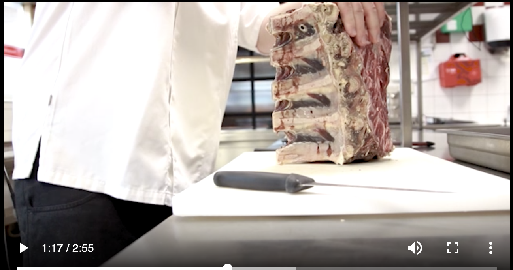
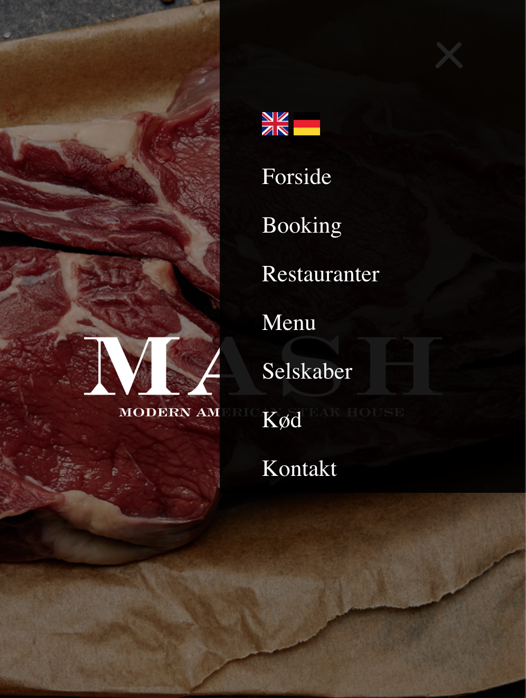

Min gruppe valgte at redesigne MASH's hjemmeside. Vi tog udgangspunkt i
at MASH generelt henvender sig til en bestemt målgruppe, og ville sætte fokus
på at MASH er for alle. Vi filmede og redigerede en video om MASH hvor der skulle
være fokus på vores interviewguide. Det var her vigtigt at lave det "gode" interview.
PJ
Content
I dette tema fik vi en grundlæggende indførsel i videoproduktion, samt forarbejdet
inden optagelse samt produktion. Her skulle vi bruge ekstern lyd og Premiere Pro til video redigering samt
Adobe Audition til lyd redigering. Dette skulle vi bruge til at lave et virksomhedsinterview, samt redesigne
virksomhedens hjemmeside. Her skulle vi gøre brug af de færdigheder vi havde tilegnet os i de foregående temaer.
Her brugte vi projektstyringsværktøjer som Scrum, Trelloboard og Storyboard.

MASH


Ovenfor ses billeder af redesignet.